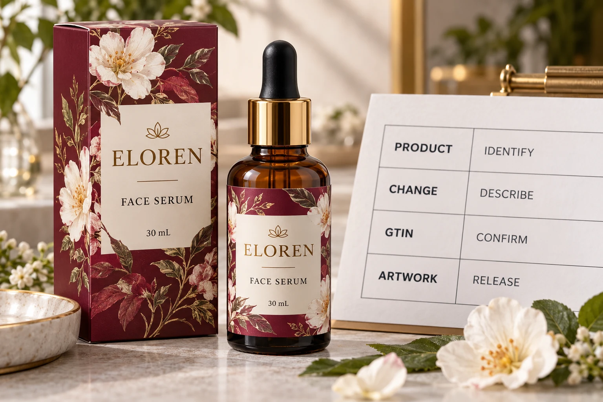

Compare the product before comparing the pictures
In a hypothetical repeat order, purchasing receives a file described as the updated serum label. That description is too broad to determine whether the change concerns decoration, product attributes or the way the item is offered to trading partners.
Start with a before-and-after product record. Identify the internal SKU, current identifier, product name, net content and units, formulation or variant information, and the packaging level being discussed. Ask the responsible team to describe the actual change rather than infer it from a visual PDF comparison.
A designer can spot a different number on the front panel. That does not make the designer the owner of the product master data or establish the identifier rule that applies to the change.
Use current assignment guidance through the responsible owner
GS1 US brand-owner guidance emphasizes complete product attributes, uniqueness across relevant variations and keeping catalogue partners updated. It provides useful context for why a copied symbol is not a complete product-identity review.
Have the brand's data owner use the current applicable GS1 GTIN Management Standard and relevant member-organisation guidance for the actual facts. Where interpretation is uncertain, obtain advice through that route before assigning or retaining an identifier. This article is a handoff method, not an exhaustive assignment rulebook for every change or market.
Do not decide from a shortcut such as the bottle looks the same or only one text line changed. Equally, do not order a new identifier simply because somebody saved a new artwork revision. Establish the product facts and the applicable decision first.
Separate three approvals that can be confused
First comes the identifier-to-product decision: which identifier belongs to the item being supplied? Second comes the artwork mapping: does this released label contain the authorised data for that item? Third comes physical barcode review on the intended printed and applied pack.
The cosmetic label barcode checklist addresses mapping, placement and physical verification. A readable symbol can still contain data for the wrong product. Conversely, correct approved data does not demonstrate that the eventual printed symbol will meet the project's requirements.
Keep the three records connected by product and revision. This makes a later change easier to investigate without asking everyone to reconstruct which approval an email saying looks good was meant to cover.
Make the product-change record actionable
Use the following editorial worksheet before the print order is released. The blank decision belongs to the authorised data owner, not to a purchasing assumption.
| Field | Required entry | Who resolves a gap |
|---|---|---|
| Existing item | Internal SKU, current GTIN and product attributes | Brand product-data owner |
| Proposed item | Corresponding new attributes and packaging level | Brand product or packaging team |
| Change | Explicit before-and-after description | Person responsible for the product change |
| Identifier decision | Retain or change, with applicable guidance reference and approval | Authorised identifier owner |
| Artwork mapping | Released filename and the authorised identifier it contains | Artwork and brand approvers |
| Partner information | Required catalogue or trading-partner updates and status | Responsible commercial/data team |
| Release limit | Pending dependency and what may proceed meanwhile | Project owner with relevant specialists |
Complete the product comparison first. Obtain the identifier decision next. Have the artwork operator place the confirmed data and return the matched output for review. If the decision is unresolved, keep the affected print release pending rather than allowing a placeholder barcode to become final.

A repeat design and a changed item need different conversations
One hypothetical order uses the same confirmed product identity and an already controlled identifier decision. The team still needs to check the current artwork and any relevant partner requirements, but it should not manufacture an identity change merely to justify a new label file.
Another order changes product facts that require review under the applicable assignment rules. Even if the label size and decorative layout are unchanged, copying the old code before that review is premature. The practical next action is to give the data owner the missing facts.
This comparison does not create a universal exception for an artwork-only change. What counts as the same item depends on the actual change and applicable guidance. The purchasing team's useful contribution is an explicit comparison and a traceable decision, rather than an unsupported rule of thumb.
Carry the decision into reorders and partner updates
Use the reorder-approval guide to tie the accepted version to quantities and the new production request. A general statement to repeat the last order should not silently override an unresolved product-data change.
Where an identifier or its associated product data changes, ask the responsible brand team which catalogue and trading-partner records require updates. Record their status separately from printing. Receiving printed labels does not confirm that a retailer's system contains the intended information.
For custom cosmetic bottle labels, provide the container, dimensions, quantity per version and approved artwork. State whether the identifier review is complete and identify the authorised data reference; avoid sending sensitive account access. The inquiry form prepares a message only. Send approved supporting files by email or WhatsApp. Ask the printer to acknowledge the released file while the brand retains ownership of the product-identity decision.